If you are feeling impatient, jump to Sample HAProps Code, or to go to the code documentation CoolProp.HumidAirProp, otherwise, hang in there.
Humid air can be modeled as a mixture of air and water vapor. In the simplest analysis, water and air are treated as ideal gases but in principle there is interaction between the air and water molecules that must be included through the use of interaction parameters.
Because humid air is a mixture of dry air (treated as a pseudo-pure gas) and water vapor (treated as a real gas), three variables are required to fix the state by the state postulate.
In the analysis that follows, the three parameters that are ultimately needed to calculate everything else are the dry bulb temperature  , the total pressure
, the total pressure  , and the molar fraction of water 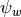. The molar fraction of air is simply 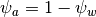.
, and the molar fraction of water 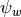. The molar fraction of air is simply 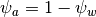.
Of course, it is not so straightforward to measure the mole fraction of water vapor molecules, so other measures are used. There are three different variables that can be used to obtain the mole fraction of water vapor without resorting to iterative methods.
The humidity ratio  is the ratio of the mass of water vapor to the mass of air in the mixture. Thus the mole fraction of water can be obtained from
is the ratio of the mass of water vapor to the mass of air in the mixture. Thus the mole fraction of water can be obtained from
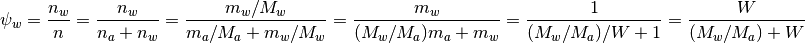
or
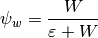
where the ratio of mole masses  is given by
is given by 
The relative humidity  is defined as the ratio of the mole fraction of water in the humid air to the saturation mole fraction of water. Because of the presence of air with the water, the pure water saturated vapor pressure 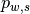 must be multiplied by an enhancement factor
is defined as the ratio of the mole fraction of water in the humid air to the saturation mole fraction of water. Because of the presence of air with the water, the pure water saturated vapor pressure 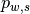 must be multiplied by an enhancement factor  that is very close to one near atmospheric conditions.
that is very close to one near atmospheric conditions.
Mathematically, the result is
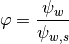
where
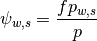
The product is defined by 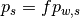, and is the saturation pressure of pure water (or ice) at temperature . This yields the result for of
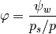
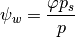
The dewpoint temperature is defined as the temperature at which the actual vapor pressure of water is equal to the saturation vapor pressure. At the given dewpoint, the vapor pressure of water is given by
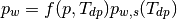
and the mole fraction of water vapor is obtained from
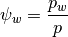
Once the state has been fixed by a set of 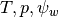, any parameter of interest can be calculated
(1)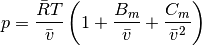
The bracketed term on the right hand side is the compressibility Z factor, equal to 1 for ideal gas, and is a measure of non-ideality of the air. The virial terms are given by
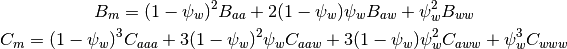
where the virial coefficients are described in ASRAE RP-1485 and their values are provided in Humid Air Validation. All virial terms are functions only of temperature.
Usually the temperature is known, the water mole fraction is calculated, and 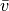 is found using iterative methods, in HAProps, using a secant solver and the first guess that the compressibility factor is 1.0.
The molar enthalpy of humid air is obtained from
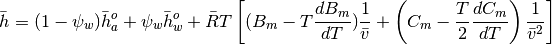
with 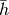 in kJ/kmol. For both air and water, the full EOS is used to evaluate the enthalpy
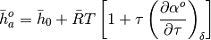
which is in kJ/kmol, using the mixture to define the parameter 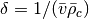 for each fluid, and using the critical molar density for the fluid obtained from 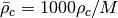 to give units of mol/m3. The offset enthalpies for air and water are given by

respectively. The enthalpy per kg of dry air is given by

The enhancement factor is a parameter that includes the impact of the air on the saturation pressure of water vapor. It is only a function of temperature and pressure, but it must be iteratively obtained due to the nature of the expression for the enhancement factor.
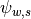 is given by 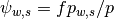, where can be obtained from
![\ln(f)=\left[ \begin{array}{l}\left [ \dfrac{(1+k_Tp_{w,s})(p-p_{w,s})-k_T\dfrac{(p^2-p_{w,s}^2)}{2}}{\overline {R} T}\right] \bar v_{w,s}+\ln[1-\beta_H(1-\psi_{w,s})p]\\
+\left[\dfrac{(1-\psi_{w,s})^2p}{\bar R T}\right] B_{aa}-2\left[\dfrac{(1-\psi_{w,s})^2p}{\bar R T}\right]B_{aw}-\left[\dfrac{(p-p_{w,s}-(1-\psi_{w,s})^2p)}{\bar R T}\right]B_{ww} \\
+\left[\dfrac{(1-\psi_{w,s})^3 p^2}{(\bar R T)^2}\right] C_{aaa}+\left[\dfrac{3(1-\psi_{w,s})^2[1-2(1-\psi_{w,s})]p^2}{2(\bar R T)^2}\right]C_{aaw}\\
-\left[\dfrac{3(1-\psi_{w,s})^2\psi_{w,s}p^2}{(\bar R T)^2}\right]C_{aww}-\left[\dfrac{(3-2\psi_{w,s})\psi_{w,s}^2p^2-p_{w,s}^2}{2(\bar R T)^2}\right]C_{www}\\
-\left[\dfrac{(1-\psi_{w,s})^2(-2+3\psi_{w,s})\psi_{w,s}p^2}{(\bar R T)^2}\right]B_{aa}B_{ww}\\
-\left[\dfrac{2(1-\psi_{w,s})^3(-1+3\psi_{w,s})p^2}{(\bar R T)^2}\right]B_{aa}B_{aw}\\
+\left[\dfrac{6(1-\psi_{w,s})^2\psi_{w,s}^2p^2}{(\bar R T)^2}\right]B_{ww}B_{aw}-\left[\dfrac{3(1-\psi_{w,s})^4p^2}{2(\bar R T)^2}\right]B_{aa}^2\\
-\left[\dfrac{2(1-\psi_{w,s})^2\psi_{w,s}(-2+3\psi_{w,s})p^2}{(\bar R T)^2}\right]B_{aw}^2-\left[\dfrac{p_{w,s}^2-(4-3\psi_{w,s})(\psi_{w,s})^3p^2}{2(\bar R T)^2}\right]B_{ww}^2
\end{array}\right]](_images/math/cdf7393e8184b987176af0c9ce964da6a43193eb.png)
For water, the isothermal compressibility [in 1/Pa] is evaluated from
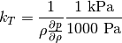
with
![\frac{\partial p}{\partial \rho}=RT\left[1+2\delta\left(\frac{\partial \alpha^r}{\partial \delta}\right)_{\tau}+\delta^2\left(\frac{\partial^2 \alpha^r}{\partial \delta^2}\right)_{\tau}\right]](_images/math/d632bdd8081e1ac948f86aa2a1045dc7fed4d58f.png)
in kPa/(kg/m3). And for ice,
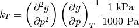
To use the HAProps function, import it and do some calls, do something like this
#import the things you need
In [1]: from CoolProp.HumidAirProp import HAProps, HAProps_Aux
#Enthalpy (kJ per kg dry air) as a function of temperature, pressure,
# and relative humidity at dry bulb temperature T of 25C, pressure
# P of one atmosphere, relative humidity R of 50%
In [2]: h=HAProps('H','T',298.15,'P',101.325,'R',0.5); print h
50.4249283433
#Temperature of saturated air at the previous enthalpy
In [3]: T=HAProps('T','P',101.325,'H',h,'R',1.0); print T
290.962168888
#Temperature of saturated air - order of inputs doesn't matter
In [4]: T=HAProps('T','H',h,'R',1.0,'P',101.325); print T
290.962168888
Values here are obtained at documentation build-time using the Humid Air Properties module
In [1]: execfile('Validation/HAValidation.py')
Replicating the tables from ASHRAE RP-1485
A.6.1 Psychrometric Properties of Moist Air at 0C and Below
Saturated air at 101.325 kPa
====================================================
T Ws v h s
C kgw/kg_da m3/kgda kJ/kgda kJ/kgda/K
----------------------------------------------------
-60 0.0000067 0.6027 -60.325 -0.2488
-55 0.0000129 0.6169 -55.280 -0.2255
-50 0.0000243 0.6312 -50.222 -0.2026
-45 0.0000445 0.6454 -45.144 -0.1801
-40 0.0000793 0.6597 -40.031 -0.1580
-35 0.0001379 0.6740 -34.859 -0.1360
-30 0.0002345 0.6883 -29.593 -0.1142
-25 0.0003905 0.7027 -24.181 -0.0921
-20 0.0006373 0.7172 -18.542 -0.0696
-15 0.0010207 0.7319 -12.560 -0.0462
-10 0.0016062 0.7468 -6.070 -0.0213
-5 0.0024863 0.7622 1.165 0.0059
0 0.0037900 0.7780 9.475 0.0366
====================================================
A.6.2 Psychrometric Properties of Moist Air at 0C and Above
Saturated air at 101.325 kPa
====================================================
T Ws v h s
C kgw/kg_da m3/kgda kJ/kgda kJ/kgda/K
----------------------------------------------------
0 0.0037900 0.778 9.47 0.0366
5 0.0054247 0.794 18.64 0.0698
10 0.0076627 0.812 29.35 0.1080
15 0.0106941 0.830 42.12 0.1527
20 0.0147612 0.850 57.56 0.2058
25 0.0201746 0.872 76.51 0.2700
30 0.0273348 0.896 100.02 0.3483
35 0.0367629 0.924 129.47 0.4449
40 0.0491482 0.957 166.70 0.5651
45 0.0654207 0.995 214.18 0.7163
50 0.0868683 1.042 275.37 0.9082
55 0.1153322 1.101 355.17 1.1550
60 0.1535507 1.175 460.90 1.4776
65 0.2057991 1.273 604.02 1.9085
70 0.2791706 1.405 803.49 2.5012
75 0.3863989 1.593 1093.39 3.3518
80 0.5529205 1.881 1541.78 4.6511
85 0.8380888 2.366 2307.48 6.8430
90 1.4201956 3.349 3867.53 11.2556
====================================================
A.8.1 Psychrometric Properties of Moist Air at 101.325 kPa
Dry Bulb temperature of 200C
================================================================
W Twb v h s RH
kgw/kg_da C m3/kgda kJ/kgda kJ/kgda/K %
----------------------------------------------------------------
0.00 45.07 1.341 202.52 0.5561 0.0000
0.05 55.38 1.448 346.49 1.0298 0.4849
0.10 61.85 1.556 490.43 1.4735 0.9026
0.20 69.95 1.771 778.25 2.3336 1.5856
0.30 75.00 1.986 1066.01 3.1751 2.1204
0.40 78.51 2.201 1353.73 4.0058 2.5506
0.50 81.12 2.416 1641.42 4.8294 2.9041
0.60 83.14 2.630 1929.09 5.6479 3.1997
0.70 84.76 2.845 2216.73 6.4623 3.4506
0.80 86.09 3.060 2504.37 7.2736 3.6662
0.90 87.20 3.274 2791.99 8.0824 3.8535
1.00 88.15 3.489 3079.60 8.8890 4.0176
================================================================
A.8.2 Psychrometric Properties of Moist Air at 1000 kPa
Dry Bulb temperature of 200C
================================================================
W Twb v h s RH
kgw/kg_da C m3/kgda kJ/kgda kJ/kgda/K %
----------------------------------------------------------------
0.00 90.47 0.136 201.94 -0.1011 0.0000
0.05 107.30 0.147 345.60 0.3166 4.7855
0.10 117.69 0.158 488.97 0.7069 8.9081
0.20 130.61 0.179 775.07 1.4594 15.6487
0.30 138.66 0.200 1060.53 2.1927 20.9270
0.40 144.29 0.222 1345.53 2.9148 25.1723
0.50 148.48 0.243 1630.17 3.6294 28.6608
0.60 151.75 0.264 1914.54 4.3385 31.5783
0.70 154.38 0.284 2198.70 5.0434 34.0545
0.80 156.55 0.305 2482.69 5.7450 36.1824
0.90 158.37 0.326 2766.53 6.4439 38.0306
1.00 159.92 0.347 3050.26 7.1405 39.6510
================================================================
A.8.3 Psychrometric Properties of Moist Air at 2000 kPa
Dry Bulb temperature of 200C
================================================================
W Twb v h s RH
kgw/kg_da C m3/kgda kJ/kgda kJ/kgda/K %
----------------------------------------------------------------
0.00 105.92 0.068 201.34 -0.3001 0.0000
0.05 125.81 0.074 344.62 0.0981 9.3460
0.10 138.02 0.079 487.33 0.4716 17.3974
0.20 153.19 0.089 771.38 1.1899 30.5616
0.30 162.65 0.100 1054.03 1.8880 40.8700
0.40 169.27 0.110 1335.64 2.5742 49.1611
0.50 174.23 0.120 1616.43 3.2524 55.9741
0.60 178.10 0.130 1896.58 3.9247 61.6720
0.70 181.22 0.140 2176.21 4.5923 66.5079
0.80 183.80 0.150 2455.41 5.2564 70.6636
0.90 185.97 0.160 2734.26 5.9175 74.2732
1.00 187.83 0.169 3012.79 6.5761 77.4377
================================================================
A.8.4 Psychrometric Properties of Moist Air at 5000 kPa
Dry Bulb temperature of 200C
================================================================
W Twb v h s RH
kgw/kg_da C m3/kgda kJ/kgda kJ/kgda/K %
----------------------------------------------------------------
0.00 126.87 0.028 199.72 -0.5631 0.0000
0.05 151.75 0.030 341.85 -0.1967 21.5409
0.10 166.94 0.032 482.37 0.1531 40.0981
0.15 177.62 0.034 621.47 0.4909 56.2513
0.20 185.71 0.036 759.34 0.8208 70.4393
0.25 192.14 0.037 896.09 1.1450 83.0001
0.30 197.41 0.039 1031.82 1.4646 94.1985
================================================================
A.8.5 Psychrometric Properties of Moist Air at 10,000 kPa
Dry Bulb temperature of 200C
================================================================
W Twb v h s RH
kgw/kg_da C m3/kgda kJ/kgda kJ/kgda/K %
----------------------------------------------------------------
0.00 142.19 0.014 197.66 -0.7620 0.0000
0.05 171.30 0.015 337.69 -0.4296 39.4555
0.10 188.91 0.016 473.92 -0.1009 73.4458
================================================================
A.9.1 Psychrometric Properties of Moist Air at 101.325 kPa
Dry Bulb temperature of 320C
================================================================
W Twb v h s RH
kgw/kg_da C m3/kgda kJ/kgda kJ/kgda/K %
----------------------------------------------------------------
0.00 54.90 1.681 326.93 0.7902 0.0000
0.05 62.07 1.816 482.76 1.2863 0.0668
0.10 67.00 1.951 638.59 1.7524 0.1244
0.20 73.54 2.221 950.21 2.6572 0.2185
0.30 77.79 2.491 1261.80 3.5435 0.2922
0.40 80.80 2.761 1573.37 4.4191 0.3515
0.50 83.07 3.030 1884.93 5.2875 0.4002
0.60 84.85 3.300 2196.47 6.1508 0.4409
0.70 86.28 3.570 2508.01 7.0101 0.4755
0.80 87.46 3.840 2819.54 7.8663 0.5052
0.90 88.45 4.109 3131.07 8.7199 0.5310
1.00 89.29 4.379 3442.59 9.5714 0.5536
================================================================
A.9.2 Psychrometric Properties of Moist Air at 1000 kPa
Dry Bulb temperature of 320C
================================================================
W Twb v h s RH
kgw/kg_da C m3/kgda kJ/kgda kJ/kgda/K %
----------------------------------------------------------------
0.00 107.70 0.171 326.80 0.1330 0.0000
0.05 118.99 0.185 482.46 0.5740 0.6594
0.10 126.73 0.198 637.99 0.9870 1.2275
0.20 137.02 0.225 948.77 1.7854 2.1563
0.30 143.73 0.252 1259.26 2.5651 2.8836
0.40 148.52 0.279 1569.56 3.3339 3.4686
0.50 152.14 0.306 1879.70 4.0955 3.9493
0.60 154.98 0.333 2189.73 4.8519 4.3514
0.70 157.28 0.360 2499.68 5.6042 4.6926
0.80 159.18 0.387 2809.55 6.3534 4.9858
0.90 160.79 0.414 3119.37 7.0999 5.2405
1.00 162.15 0.441 3429.15 7.8444 5.4637
================================================================
A.9.3 Psychrometric Properties of Moist Air at 2000 kPa
Dry Bulb temperature of 320C
================================================================
W Twb v h s RH
kgw/kg_da C m3/kgda kJ/kgda kJ/kgda/K %
----------------------------------------------------------------
0.00 126.92 0.086 326.68 -0.0659 0.0000
0.05 140.12 0.093 482.14 0.3565 1.3188
0.10 149.16 0.099 637.35 0.7532 2.4550
0.20 161.19 0.113 947.16 1.5187 4.3126
0.30 169.06 0.126 1256.41 2.2654 5.7673
0.40 174.70 0.140 1565.23 3.0010 6.9373
0.50 178.97 0.153 1873.75 3.7292 7.8987
0.60 182.34 0.166 2182.04 4.4521 8.7027
0.70 185.07 0.179 2490.14 5.1709 9.3851
0.80 187.34 0.192 2798.09 5.8864 9.9716
0.90 189.24 0.206 3105.93 6.5994 10.4809
1.00 190.88 0.219 3413.67 7.3101 10.9275
================================================================
A.9.4 Psychrometric Properties of Moist Air at 5000 kPa
Dry Bulb temperature of 320C
================================================================
W Twb v h s RH
kgw/kg_da C m3/kgda kJ/kgda kJ/kgda/K %
----------------------------------------------------------------
0.00 154.63 0.035 326.46 -0.3289 0.0000
0.05 170.96 0.037 481.31 0.0647 3.2971
0.10 182.16 0.040 635.49 0.4393 6.1375
0.15 190.54 0.043 789.13 0.8029 8.6099
0.20 197.13 0.045 942.31 1.1599 10.7816
0.25 202.50 0.048 1095.11 1.5121 12.7042
0.30 206.98 0.050 1247.59 1.8607 14.4182
0.40 214.09 0.056 1551.73 2.5500 17.3432
0.50 219.51 0.061 1855.02 3.2314 19.7467
0.60 223.81 0.066 2157.63 3.9071 21.7568
0.70 227.32 0.071 2459.71 4.5785 23.4628
0.80 230.24 0.076 2761.36 5.2464 24.9289
0.90 232.72 0.081 3062.64 5.9114 26.2023
1.00 234.84 0.085 3363.63 6.5741 27.3187
================================================================
A.9.5 Psychrometric Properties of Moist Air at 10,000 kPa
Dry Bulb temperature of 320C
================================================================
W Twb v h s RH
kgw/kg_da C m3/kgda kJ/kgda kJ/kgda/K %
----------------------------------------------------------------
0.00 176.71 0.018 326.51 -0.5279 0.0000
0.05 195.84 0.019 480.31 -0.1628 6.5942
0.10 208.99 0.020 632.70 0.1940 12.2750
0.15 218.85 0.022 783.90 0.5394 17.2199
0.20 226.63 0.023 934.12 0.8776 21.5632
0.25 232.99 0.024 1083.47 1.2106 25.4084
0.30 238.33 0.025 1232.08 1.5398 28.8365
0.40 246.84 0.028 1527.40 2.1891 34.6863
0.50 253.39 0.030 1820.61 2.8296 39.4934
0.60 258.63 0.032 2112.08 3.4633 43.5136
0.70 262.94 0.034 2402.10 4.0919 46.9257
0.80 266.55 0.036 2690.88 4.7164 49.8578
0.90 269.63 0.039 2978.59 5.3373 52.4046
1.00 272.29 0.041 3265.36 5.9553 54.6373
================================================================
Pure fluid Virial Coefficients
------------------------------
T Baa Caaa Bww Cwww
C m^3/mol m^6/mol^2 m^3/mol m^6/mol^2
-60.0 -3.3064504913e-05 2.1778824938e-09 -1.1174019230e-02 -1.5162999202e-04
-50.0 -2.8932056455e-05 2.1163899675e-09 -7.8721344601e-03 -8.7876443450e-05
-40.0 -2.5223205510e-05 2.0616654251e-09 -5.7127237936e-03 -5.5471169827e-05
-30.0 -2.1877241883e-05 2.0127194393e-09 -4.2586206439e-03 -3.6054469559e-05
-20.0 -1.8844568169e-05 1.9687401829e-09 -3.2532396168e-03 -2.3880059931e-05
-10.0 -1.6084254149e-05 1.9290560799e-09 -2.5411800904e-03 -1.6072255381e-05
0.0 -1.3562212432e-05 1.8931073782e-09 -2.0256198165e-03 -1.0976417740e-05
10.0 -1.1249818308e-05 1.8604242748e-09 -1.6446680868e-03 -7.5982163024e-06
20.0 -9.1228522265e-06 1.8306099144e-09 -1.3578320706e-03 -5.3262052029e-06
30.0 -7.1606799362e-06 1.8033270512e-09 -1.1380508933e-03 -3.7775459437e-06
40.0 -5.3456100212e-06 1.7782874940e-09 -9.6688526113e-04 -2.7086428677e-06
50.0 -3.6623854498e-06 1.7552436864e-09 -8.3154379347e-04 -1.9621727951e-06
60.0 -2.0977774966e-06 1.7339819395e-09 -7.2300490095e-04 -1.4351073680e-06
70.0 -6.4025867871e-07 1.7143169545e-09 -6.3480699108e-04 -1.0590893524e-06
80.0 7.2026273739e-07 1.6960873599e-09 -5.6225490863e-04 -7.8820575279e-07
90.0 1.9926598215e-06 1.6791520531e-09 -5.0189060427e-04 -5.9126042925e-07
100.0 3.1847656914e-06 1.6633871834e-09 -4.5113452236e-04 -4.4682459202e-07
110.0 4.3035215681e-06 1.6486836511e-09 -4.0803910950e-04 -3.4002631896e-07
120.0 5.3551001609e-06 1.6349450222e-09 -3.7111708564e-04 -2.6044312214e-07
130.0 6.3450090665e-06 1.6220857829e-09 -3.3922027793e-04 -2.0070289771e-07
140.0 7.2781778723e-06 1.6100298701e-09 -3.1145310612e-04 -1.5554517129e-07
150.0 8.1590318924e-06 1.5987094301e-09 -2.8711011151e-04 -1.2118478060e-07
160.0 8.9915548780e-06 1.5880637641e-09 -2.6563036496e-04 -9.4876383834e-08
170.0 9.7793425843e-06 1.5780384311e-09 -2.4656385529e-04 -7.4613666456e-08
180.0 1.0525648716e-05 1.5685844791e-09 -2.2954647025e-04 -5.8919760770e-08
190.0 1.1233424489e-05 1.5596577861e-09 -2.1428120144e-04 -4.6699996544e-08
200.0 1.1905352827e-05 1.5512184922e-09 -2.0052390022e-04 -3.7137617887e-08
T Baw Caaw Caww
C m^3/mol m^6/mol^2 m^6/mol^2
-60.0 -6.8305808721e-05 1.0273000716e-09 -1.8214316825e-06
-50.0 -6.1680233064e-05 1.0001595421e-09 -1.1787612409e-06
-40.0 -5.5836203092e-05 9.7107903308e-10 -7.9593677251e-07
-30.0 -5.0645881561e-05 9.4180678583e-10 -5.5678343751e-07
-20.0 -4.6007498746e-05 9.1337025409e-10 -4.0128618357e-07
-10.0 -4.1839118849e-05 8.8634392341e-10 -2.9668474376e-07
0.0 -3.8074090909e-05 8.6101819497e-10 -2.2423408862e-07
10.0 -3.4657682115e-05 8.3750672364e-10 -1.7276396504e-07
20.0 -3.1544553729e-05 8.1581500536e-10 -1.3537862024e-07
30.0 -2.8696845981e-05 7.9588431449e-10 -1.0768721224e-07
40.0 -2.6082708793e-05 7.7761982700e-10 -8.6816421215e-08
50.0 -2.3675162869e-05 7.6090853025e-10 -7.0839762898e-08
60.0 -2.1451208360e-05 7.4563050528e-10 -5.8437245597e-08
70.0 -1.9391120996e-05 7.3166589756e-10 -4.8686625860e-08
80.0 -1.7477891584e-05 7.1889908286e-10 -4.0932107713e-08
90.0 -1.5696776156e-05 7.0722101405e-10 -3.4699849863e-08
100.0 -1.4034932249e-05 6.9653039669e-10 -2.9642457363e-08
110.0 -1.2481122776e-05 6.8673412025e-10 -2.5501820730e-08
120.0 -1.1025473368e-05 6.7774722643e-10 -2.2083805133e-08
130.0 -9.6592722783e-06 6.6949259959e-10 -1.9240735645e-08
140.0 -8.3748044505e-06 6.6190050073e-10 -1.6859099163e-08
150.0 -7.1652131416e-06 6.5490802360e-10 -1.4850792059e-08
160.0 -6.0243839304e-06 6.4845852337e-10 -1.3146812982e-08
170.0 -4.9468470096e-06 6.4250104926e-10 -1.1692664630e-08
180.0 -3.9276944932e-06 6.3698980018e-10 -1.0444965002e-08
190.0 -2.9625101219e-06 6.3188361380e-10 -9.3689246298e-09
200.0 -2.0473092535e-06 6.2714549461e-10 -8.4364506623e-09
Pure fluid Virial Coefficients Derivatives
------------------------------------------
T dBaa dCaaa dBww dCwww
C m^3/mol m^6/mol^2 m^3/mol m^6/mol^2
-60.0 4.3678901718e-07 -6.5260142915e-12 4.0907134267e-04 9.7890226354e-06
-50.0 3.9094567047e-07 -5.7926592167e-12 2.6368394754e-04 4.2599502947e-06
-40.0 3.5183089770e-07 -5.1686581014e-12 1.7524578197e-04 2.4534393299e-06
-30.0 3.1818443574e-07 -4.6340080568e-12 1.1972698408e-04 1.5168065377e-06
-20.0 2.8902947780e-07 -4.1729893295e-12 8.3872099442e-05 9.6398593676e-07
-10.0 2.6359917737e-07 -3.7731243933e-12 6.0116039515e-05 6.2432369125e-07
0.0 2.4128450184e-07 -3.4244179438e-12 4.4005975878e-05 4.1098208661e-07
10.0 2.2159662973e-07 -3.1187949704e-12 3.2846510930e-05 2.7460403742e-07
20.0 2.0413943007e-07 -2.8496804340e-12 2.4963984884e-05 1.8603616949e-07
30.0 1.8858904489e-07 -2.6116814716e-12 1.9294782853e-05 1.2767077184e-07
40.0 1.7467855065e-07 -2.4003447122e-12 1.5148499662e-05 8.8680545113e-08
50.0 1.6218630137e-07 -2.2119692232e-12 1.2068194612e-05 6.2299023007e-08
60.0 1.5092697458e-07 -2.0434610819e-12 9.7459891450e-06 4.4233628528e-08
70.0 1.4074462510e-07 -1.8922193892e-12 7.9709845791e-06 3.1722703755e-08
80.0 1.3150724657e-07 -1.7560462466e-12 6.5964818172e-06 2.2965939524e-08
90.0 1.2310247686e-07 -1.6330751509e-12 5.5189694206e-06 1.6775066230e-08
100.0 1.1543417961e-07 -1.5217136531e-12 4.6644255474e-06 1.2356544597e-08
110.0 1.0841970276e-07 -1.4205971497e-12 3.9792467564e-06 9.1745433381e-09
120.0 1.0198766459e-07 -1.3285514223e-12 3.4241524938e-06 6.8634361312e-09
130.0 9.6076153981e-08 -1.2445620955e-12 2.9700329278e-06 5.1712462037e-09
140.0 9.0631258338e-08 -1.1677496028e-12 2.5950842306e-06 3.9226745555e-09
150.0 8.5605852607e-08 -1.0973485627e-12 2.2828082790e-06 2.9946680051e-09
160.0 8.0958597486e-08 -1.0326907048e-12 2.0206000698e-06 2.3001073053e-09
170.0 7.6653106484e-08 -9.7319067118e-13 1.7987394663e-06 1.7768097024e-09
180.0 7.2657249944e-08 -9.1833415579e-13 1.6096642209e-06 1.3800451723e-09
190.0 6.8942570813e-08 -8.6766795626e-13 1.4474407409e-06 1.0773983166e-09
200.0 6.5483792067e-08 -8.2079159614e-13 1.3073752610e-06 8.4521068723e-10
T dBaw dCaaw dCaww
C m^3/mol m^6/mol^2 m^6/mol^2
-60.0 7.0671067841e-07 -2.5329306643e-12 8.3652108680e-08
-50.0 6.2109405080e-07 -2.8479923244e-12 4.8634111869e-08
-40.0 5.4982837510e-07 -2.9396633262e-12 2.9766967562e-08
-30.0 4.8992187794e-07 -2.8980941059e-12 1.9020412856e-08
-20.0 4.3911281598e-07 -2.7799104397e-12 1.2604799172e-08
-10.0 3.9566848048e-07 -2.6206893674e-12 8.6179394263e-09
0.0 3.5824516845e-07 -2.4426731561e-12 6.0532052853e-09
10.0 3.2578908214e-07 -2.2596007123e-12 4.3529611359e-09
20.0 2.9746516934e-07 -2.0797672895e-12 3.1957227862e-09
30.0 2.7260533603e-07 -1.9079803096e-12 2.3895374649e-09
40.0 2.5067028507e-07 -1.7468190020e-12 1.8161835419e-09
50.0 2.3122106772e-07 -1.5974502672e-12 1.4008122071e-09
60.0 2.1389764536e-07 -1.4601590182e-12 1.0948500459e-09
70.0 1.9840257004e-07 -1.3346933582e-12 8.6606704976e-10
80.0 1.8448844334e-07 -1.2204888941e-12 6.9264384038e-10
90.0 1.7194819305e-07 -1.1168137618e-12 5.5953719449e-10
100.0 1.6060747132e-07 -1.0228614572e-12 4.5620187444e-10
110.0 1.5031866448e-07 -9.3780925812e-13 3.7513243420e-10
120.0 1.4095613794e-07 -8.6085397191e-13 3.1091182225e-10
130.0 1.3241243488e-07 -7.9123279439e-13 2.5957962745e-10
140.0 1.2459521736e-07 -7.2823445525e-13 2.1820572123e-10
150.0 1.1742478936e-07 -6.7120410110e-13 1.8459817415e-10
160.0 1.1083207914e-07 -6.1954421544e-13 1.5710036152e-10
170.0 1.0475698647e-07 -5.7271310484e-13 1.3444819325e-10
180.0 9.9147021510e-08 -5.3022196394e-13 1.1566843627e-10
190.0 9.3956178059e-08 -4.9163118437e-13 1.0000548446e-10
200.0 8.9143996459e-08 -4.5654633851e-13 8.6868060073e-11
Water saturation pressure p_ws [kPa]
T p_ws
C kPa
-60.00 1.0813475449e-03
-30.00 3.8005139487e-02
0.00 6.1115347506e-01
30.00 4.2469708368e+00
60.00 1.9946434308e+01
90.00 7.0181765815e+01
120.00 1.9867442048e+02
150.00 4.7616453797e+02
180.00 1.0028105361e+03
210.00 1.9076749935e+03
240.00 3.3469251443e+03
270.00 5.5029867830e+03
300.00 8.5879049408e+03
Henry Constant (zero for T < 273.15 K)
T beta_H
C 1/Pa
0.01 2.2594716179e-10
30.01 1.3057686757e-10
60.01 1.0117585230e-10
90.01 9.5497883156e-11
120.01 1.0310426319e-10
150.01 1.2208023220e-10
180.01 1.5413827679e-10
210.01 2.0381389558e-10
240.01 2.7937239532e-10
270.01 3.9585779756e-10
300.01 5.8395612126e-10
Isothermal Compressibility of water (kT) [1/Pa]
T p = 101.325 kPa p = 200.000 kPa p = 500.000 kPa p = 1000.000 kPa
-60.00 1.0771099108e-10 1.0770400843e-10 1.0768278304e-10 1.0764742021e-10
-30.00 1.1257575753e-10 1.1256891351e-10 1.1254810951e-10 1.1251344878e-10
0.00 1.1778484390e-10 1.1777815515e-10 1.1775782318e-10 1.1772394894e-10
30.00 4.4769215926e-10 4.4757839136e-10 4.4723283185e-10 4.4665799039e-10
60.00 4.4498410831e-10 4.4486168535e-10 4.4448993304e-10 4.4387184012e-10
90.00 4.7435252886e-10 4.7420162082e-10 4.7374350233e-10 4.7298225299e-10
120.00 9.9921266547e-06 5.3127559838e-10 5.3065807736e-10 5.2963267414e-10
150.00 9.9549778368e-06 5.0900764947e-06 6.2035875947e-10 6.1886730491e-10
180.00 9.9321723168e-06 5.0649930128e-06 2.0719460530e-06 1.0891981409e-06
210.00 9.9171060788e-06 5.0489353919e-06 2.0523969176e-06 1.0591708688e-06
240.00 9.9066182763e-06 5.0379724346e-06 2.0398484121e-06 1.0433310707e-06
270.00 9.8990250188e-06 5.0301347121e-06 2.0312151859e-06 1.0331629008e-06
300.00 9.8933577364e-06 5.0243339669e-06 2.0249872999e-06 1.0261419911e-06
Molar volume of saturated liquid water or ice (vbar_ws) [m^3/mol_H2O]
T p = 101.325 kPa p = 200.000 kPa p = 500.000 kPa p = 1000.000 kPa
-60.00 1.9483369646e-05 1.9483369439e-05 1.9483368809e-05 1.9483367760e-05
-30.00 1.9562529421e-05 1.9562529203e-05 1.9562528542e-05 1.9562527441e-05
0.00 1.9652071280e-05 1.9652071051e-05 1.9652070357e-05 1.9652069200e-05
30.00 1.8094773222e-05 1.8094773222e-05 1.8094773222e-05 1.8094773222e-05
60.00 1.8323837443e-05 1.8323837443e-05 1.8323837443e-05 1.8323837443e-05
90.00 1.8662959891e-05 1.8662959891e-05 1.8662959891e-05 1.8662959891e-05
120.00 1.9102048132e-05 1.9102048132e-05 1.9102048132e-05 1.9102048132e-05
150.00 1.9645709876e-05 1.9645709876e-05 1.9645709876e-05 1.9645709876e-05
180.00 2.0310359748e-05 2.0310359748e-05 2.0310359748e-05 2.0310359748e-05
210.00 2.1126885602e-05 2.1126885602e-05 2.1126885602e-05 2.1126885602e-05
240.00 2.2149039824e-05 2.2149039824e-05 2.2149039824e-05 2.2149039824e-05
270.00 2.3473849596e-05 2.3473849596e-05 2.3473849596e-05 2.3473849596e-05
300.00 2.5297523418e-05 2.5297523418e-05 2.5297523418e-05 2.5297523418e-05
Enhancement factor (f) [no units]
T p = 101.325 kPa p = 200.000 kPa p = 500.000 kPa p = 1000.000 kPa p = 10000.000 kPa
-60.00 1.0070775889e+00 1.0140339781e+00 1.0356182636e+00 1.0730973477e+00 2.2389390546e+00
-40.00 1.0056000404e+00 1.0110608387e+00 1.0279266148e+00 1.0569409234e+00 1.8450352638e+00
-20.00 1.0046363568e+00 1.0090315492e+00 1.0225621568e+00 1.0456875572e+00 1.6193681609e+00
0.00 1.0041972674e+00 1.0078137837e+00 1.0189177380e+00 1.0378059899e+00 1.4778434071e+00
40.00 1.0048337252e+00 1.0074421063e+00 1.0151963055e+00 1.0282275463e+00 1.3082438296e+00
80.00 1.0057272574e+00 1.0097059521e+00 1.0168897804e+00 1.0272924733e+00 1.2343415716e+00
120.00 1.0000000000e+00 1.0001669826e+00 1.0183856144e+00 1.0312270796e+00 1.2048251925e+00
160.00 1.0000000000e+00 1.0000000000e+00 1.0000000000e+00 1.0231647562e+00 1.2031656032e+00
200.00 1.0000000000e+00 1.0000000000e+00 1.0000000000e+00 1.0000000000e+00 1.2128828351e+00
250.00 1.0000000000e+00 1.0000000000e+00 1.0000000000e+00 1.0000000000e+00 1.1903237721e+00
300.00 1.0000000000e+00 1.0000000000e+00 1.0000000000e+00 1.0000000000e+00 1.0480338876e+00
350.00 1.0000000000e+00 1.0000000000e+00 1.0000000000e+00 1.0000000000e+00 1.0000000000e+00
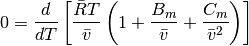
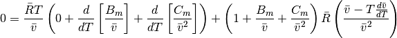
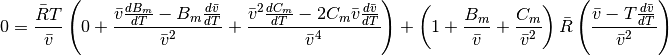
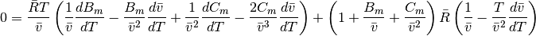
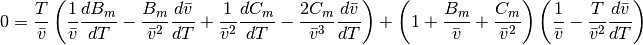
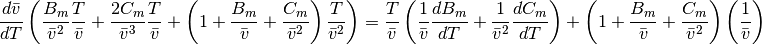
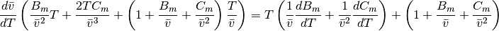
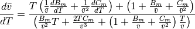
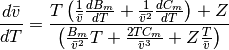
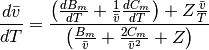
where
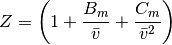
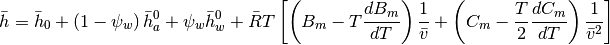
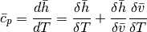
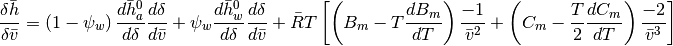
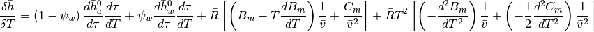

![\frac{{\delta \bar h}}{{\delta T}} = \left( {1 - {\psi _w}} \right)\frac{{d\bar h_a^0}}{{d\tau }}\frac{{d\tau }}{{dT}} + {\psi _w}\frac{{d\bar h_w^0}}{{d\tau }}\frac{{d\tau }}{{dT}} + \bar R\left[ {\left( {{B_m} - T\frac{{d{B_m}}}{{dT}}} \right)\frac{1}{{\bar v}} + \left( {{C_m} - \frac{T}{2}\frac{{d{C_m}}}{{dT}}} \right)\frac{1}{{{{\bar v}^2}}}} \right] + \bar RT\left[ {\left( {\frac{{d{B_m}}}{{dT}} - \frac{{d{B_m}}}{{dT}} - T\frac{{{d^2}{B_m}}}{{d{T^2}}}} \right)\frac{1}{{\bar v}} + \left( {\frac{{d{C_m}}}{{dT}} - \frac{1}{2}\frac{{d{C_m}}}{{dT}} - \frac{T}{2}\frac{{{d^2}{C_m}}}{{d{T^2}}}} \right)\frac{1}{{{{\bar v}^2}}}} \right]\\](_images/math/9f251fc94c1cf25b66daef8e98ffaf4015d59ae3.png)